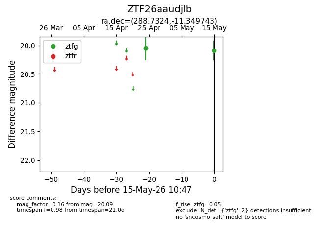
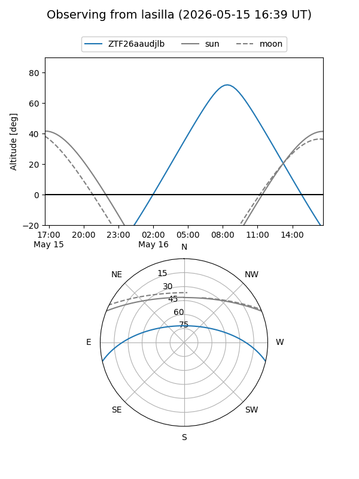
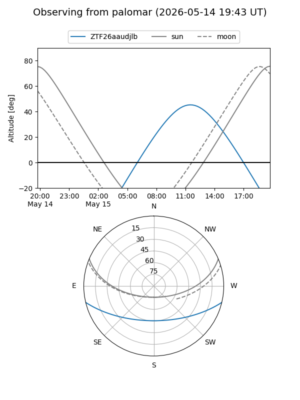
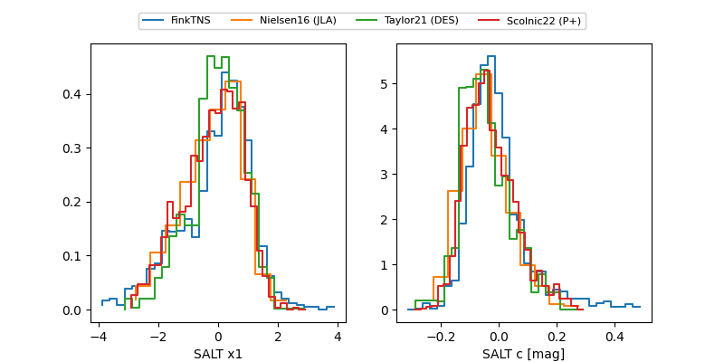

ZTF26aaudjlb
Target ZTF26aaudjlb at 2026-05-15 10:49
Aliases and brokers:
FINK: link
Lasair: link
ALeRCE: link
alt names
ZTF26aaudjlb (ztf,fink_ztf)
Coordinates:
equatorial (ra, dec) = 288.7324,-11.34974
equatorial (HMS+DMS) = 19:14:55.77,-11:20:59.08
galactic (l, b) = (25.3741,-10.31273)
Flags:
Photometry:
last ztfg=20.09
2 ztfg detections
Lightcurve

Visibility


Additional plots
